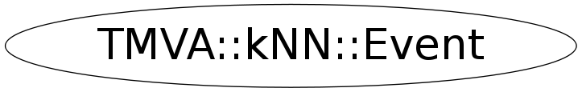

class TMVA::kNN::Event
Event and Track classes
The Event class is a naive/simple example of an event structure.
public:
char fType[20];
char *fEventName; //run+event number in character format
Int_t fNtrack;
Int_t fNseg;
Int_t fNvertex;
UInt_t fFlag;
Double32_t fTemperature;
Int_t fMeasures[10];
Double32_t fMatrix[4][4];
Double32_t *fClosestDistance; //[fNvertex] indexed array!
EventHeader fEvtHdr;
TClonesArray *fTracks;
TRefArray *fHighPt; //array of High Pt tracks only
TRefArray *fMuons; //array of Muon tracks only
TRef fLastTrack; //pointer to last track
TRef fHistoWeb; //EXEC:GetHistoWeb reference to an histogram in a TWebFile
TH1F *fH;
TBits fTriggerBits; //Bits triggered by this event.
The EventHeader class has 3 data members (integers):
public:
Int_t fEvtNum;
Int_t fRun;
Int_t fDate;
The Event data member fTracks is a pointer to a TClonesArray.
It is an array of a variable number of tracks per event.
Each element of the array is an object of class Track with the members:
private:
Float_t fPx; //X component of the momentum
Float_t fPy; //Y component of the momentum
Float_t fPz; //Z component of the momentum
Float_t fRandom; //A random track quantity
Float_t fMass2; //The mass square of this particle
Float_t fBx; //X intercept at the vertex
Float_t fBy; //Y intercept at the vertex
Float_t fMeanCharge; //Mean charge deposition of all hits of this track
Float_t fXfirst; //X coordinate of the first point
Float_t fXlast; //X coordinate of the last point
Float_t fYfirst; //Y coordinate of the first point
Float_t fYlast; //Y coordinate of the last point
Float_t fZfirst; //Z coordinate of the first point
Float_t fZlast; //Z coordinate of the last point
Double32_t fCharge; //Charge of this track
Double32_t fVertex[3]; //Track vertex position
Int_t fNpoint; //Number of points for this track
Short_t fValid; //Validity criterion
Int_t fNsp; //Number of points for this track with a special value
Double32_t *fPointValue; //[fNsp] a special quantity for some point.
TBits fTriggerBits; //Bits triggered by this track.
An example of a batch program to use the Event/Track classes is given
in this directory: MainEvent.
Look also in the same directory at the following macros:
- eventa.C an example how to read the tree
- eventb.C how to read events conditionally
During the processing of the event (optionally) also a large number
of histograms can be filled. The creation and handling of the
histograms is taken care of by the HistogramManager class.
Note: This version of the class Event (see EventMT.h and EventMT.cxx
for an alternative) uses static variables to improve performance (by
reducing the number of memory allocations). Consequently, only one
instance of the class Event should be in use at a time (a 2nd instance
would share the array of Tracks with the first instance).
Function Members (Methods)
public:
| ~Event() | |
| TMVA::kNN::Event | Event() |
| TMVA::kNN::Event | Event(const TMVA::kNN::Event&) |
| TMVA::kNN::Event | Event(const TMVA::kNN::VarVec& vec, Double_t weight, Short_t type) |
| TMVA::kNN::Event | Event(const TMVA::kNN::VarVec& vec, Double_t weight, Short_t type, const TMVA::kNN::VarVec& tvec) |
| TMVA::kNN::VarType | GetDist(const TMVA::kNN::Event& other) const |
| TMVA::kNN::VarType | GetDist(TMVA::kNN::VarType var, UInt_t ivar) const |
| TMVA::kNN::VarType | GetDist(const TMVA::kNN::VarType var1, const UInt_t ivar) const |
| UInt_t | GetNTgt() const |
| UInt_t | GetNVar() const |
| const TMVA::kNN::VarVec& | GetTargets() const |
| TMVA::kNN::VarType | GetTgt(UInt_t i) const |
| TMVA::kNN::VarType | GetTgt(const UInt_t i) const |
| Short_t | GetType() const |
| TMVA::kNN::VarType | GetVar(UInt_t i) const |
| TMVA::kNN::VarType | GetVar(const UInt_t i) const |
| const TMVA::kNN::VarVec& | GetVars() const |
| Double_t | GetWeight() const |
| TMVA::kNN::Event& | operator=(const TMVA::kNN::Event&) |
| void | Print() const |
| void | Print(ostream& os) const |
| void | SetTargets(const TMVA::kNN::VarVec& tvec) |
Class Charts
{kind=link}
{kind=link}
{kind=link}
{kind=link}

Function documentation
Event()
Create an Event object. When the constructor is invoked for the first time, the class static variable fgTracks is 0 and the TClonesArray fgTracks is created.
~Event()
Event()
void SetTargets(const TMVA::kNN::VarVec& tvec)
const VarVec& GetTargets() const
const VarVec& GetVars() const
void Print() const
VarType GetDist(const TMVA::kNN::VarType var1, const UInt_t ivar) const
inlined functions for Event class